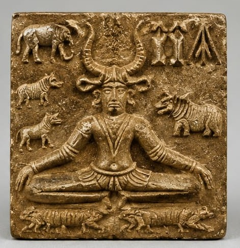
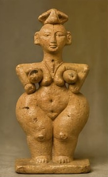
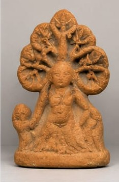

Exploring the spiritual beliefs and the mysterious political structure of the Harappans.
Harappan religion was deeply rooted in nature, fertility, and animal worship.

Pashupati Seal

Mother Goddess

Nature Worship
While no palaces or crowns were found, the extreme uniformity of the cities suggests a powerful central authority.
Some scholars believe a class of priests ruled from the Citadels, combining religious and political power.
The rulers are still unknown because the script is undeciphered.
The "Invisible Hand" of government is seen in the identical brick sizes and weight systems used across 1,500 kilometers.
Public buildings and drainage systems suggest efficient civic management.